← 返回阅读库 · 原论文目录
论文讲解阅读文档 · 论文精读 · v216
DeepSeek-V4不会比它更好 Kimi K2.5
视频时长 00:07:55；讲解文字 2,551 字符；提取讲解画面 154 张。按视频原顺序阅读，每段文字保留时间戳。
文字来自整段视频的自动语音转写，按自然停顿分段，并与 PPT / 论文页面 / 演示画面对齐。未将讲解压缩为摘要；术语、数字和口述公式请结合画面及原论文核对。 阅读稿已校正规范部分明确术语误识别；原始逐字稿和每处修改记录另行保留。
讲解画面为源视频截图（640×360），不是可编辑 PPT 文件。全片按每秒 2 帧扫描内容变化，逐步展开页保留；连续动画保留代表画面。清晰度受源视频限制。
下载完整资料包 · 含离线 HTML、PDF、Word、全部 PPT 画面和字幕。
原论文与材料
Kimi K2.5: Visual Agentic Intelligence · 下载完整 PDF（31 页）
按时间阅读
00:00:00–00:00:02 · 画面 001
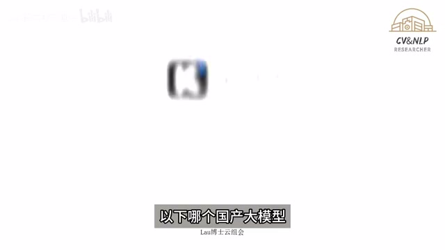
00:00:00–00:00:02 · 画面 001以下哪个国产大模型是你心中的 Top1？如果你一年前问我这个问题，我会毫不犹豫的说出 DeepSeek。在去年的这个时候，DeepSeek R1 横空出世，一时风头无二。即使现在，大家也相当的期待 DeepSeek V4 的推出。而今天我们要聊的这篇论文，来自可能最不受大家关注的 Kimi。
00:00:02–00:00:06 · 画面 002
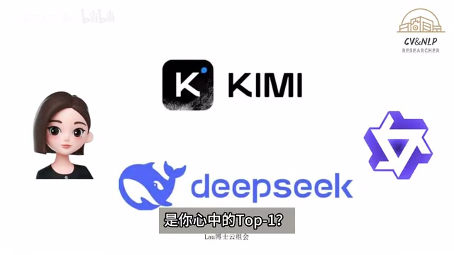
00:00:02–00:00:06 · 画面 00200:00:06–00:00:10 · 画面 003
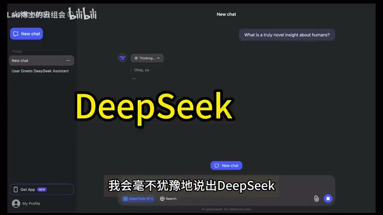
00:00:06–00:00:10 · 画面 00300:00:10–00:00:14 · 画面 004
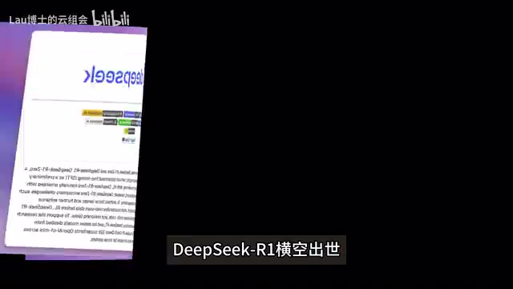
00:00:10–00:00:14 · 画面 00400:00:14–00:00:18 · 画面 005
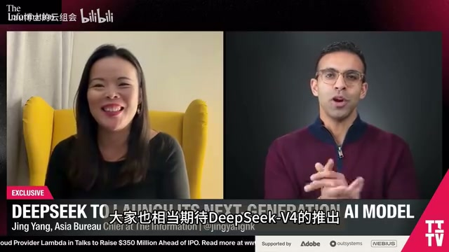
00:00:14–00:00:18 · 画面 00500:00:18–00:00:22 · 画面 006
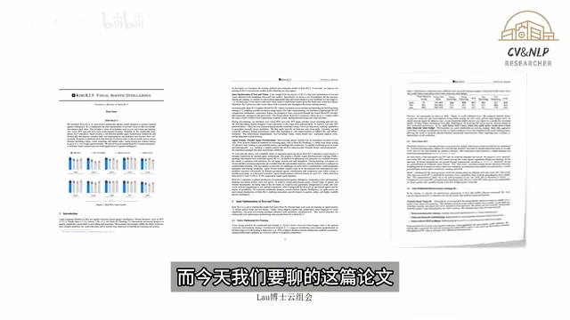
00:00:18–00:00:22 · 画面 006其推出的零视觉监督微调和 Agent Swarm 我看完论文后确实被震撼到了甚至我敢大胆的预测就算是大家盼着春节前后发布的 DeepSeek V4 在 Agent 层面大概率也干不过这次的 Kimi K2.5 说到这估计大家心里肯定一堆疑问 Agent Swarm 到底是个什么?和我们平时用的 AI Agent 有什么本质的区别?
00:00:22–00:00:26 · 画面 007
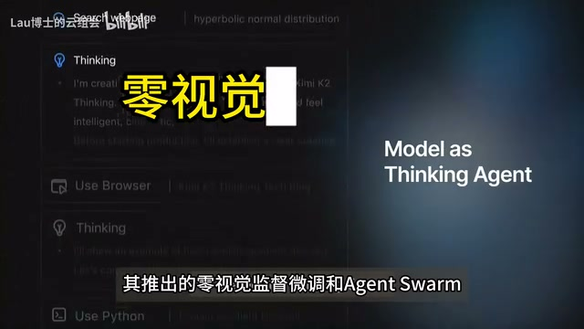
00:00:22–00:00:26 · 画面 00700:00:26–00:00:30 · 画面 008
00:00:26–00:00:30 · 画面 00800:00:30–00:00:34 · 画面 009
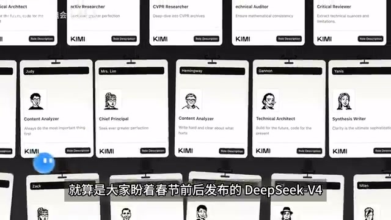
00:00:30–00:00:34 · 画面 00900:00:34–00:00:35 · 画面 010
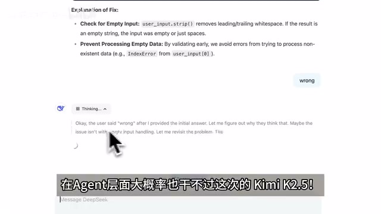
00:00:34–00:00:35 · 画面 01000:00:35–00:00:39 · 画面 011
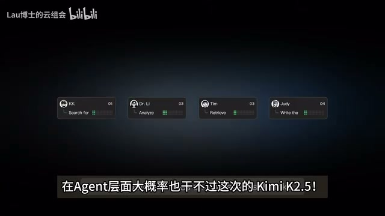
00:00:35–00:00:39 · 画面 01100:00:39–00:00:43 · 画面 012
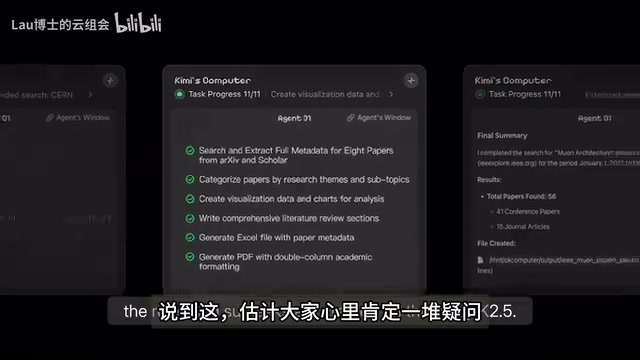
00:00:39–00:00:43 · 画面 01200:00:43–00:00:46 · 画面 013
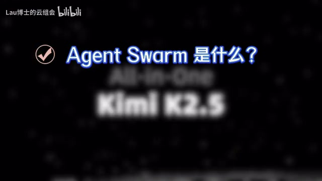
00:00:43–00:00:46 · 画面 01300:00:46–00:00:48 · 画面 014
00:00:46–00:00:48 · 画面 014论文里还藏着哪些真干货？点赞加收藏方便回看。接下来我们正式进入本期云组会。不知道各位教授有没有过这种体验，用 AI 分析报告论文图表中的数据，它有时候会认错的。让 AI 看视频总结，它大多只会从字幕中提取信息，容易忽略关键的画面。这其实就是传统多模态模型的通病，文本和视觉的训练是相对独立的。
00:00:48–00:00:49 · 画面 015
00:00:48–00:00:49 · 画面 01500:00:49–00:00:53 · 画面 016
00:00:49–00:00:53 · 画面 01600:00:53–00:00:57 · 画面 017
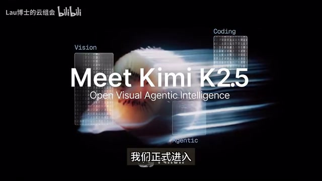
00:00:53–00:00:57 · 画面 01700:00:57–00:01:01 · 画面 018
00:00:57–00:01:01 · 画面 01800:01:01–00:01:04 · 画面 019
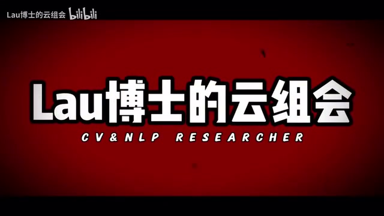
00:01:01–00:01:04 · 画面 01900:01:04–00:01:06 · 画面 020
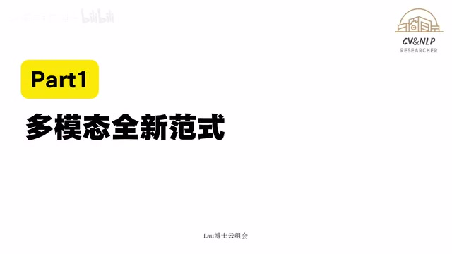
00:01:04–00:01:06 · 画面 02000:01:06–00:01:10 · 画面 021
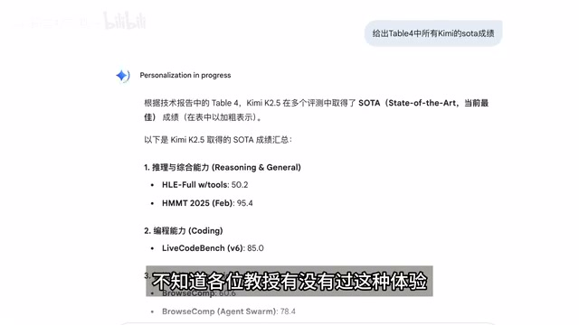
00:01:06–00:01:10 · 画面 02100:01:10–00:01:12 · 画面 022
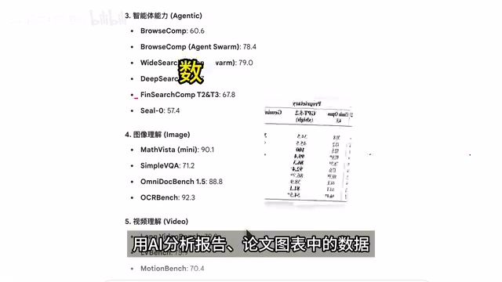
00:01:10–00:01:12 · 画面 02200:01:12–00:01:13 · 画面 023
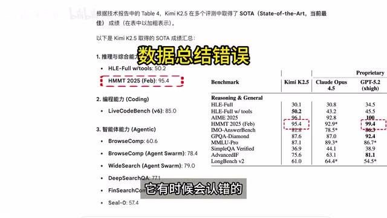
00:01:12–00:01:13 · 画面 02300:01:13–00:01:15 · 画面 024
00:01:13–00:01:15 · 画面 02400:01:15–00:01:19 · 画面 025
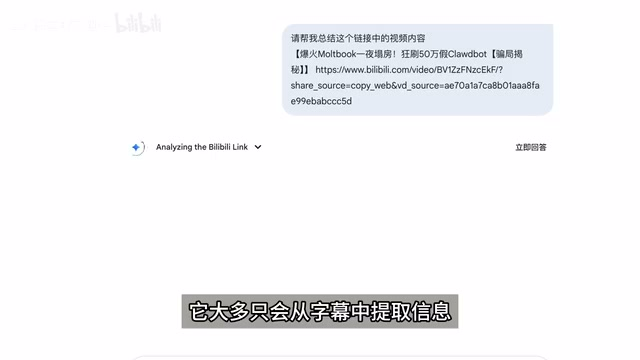
00:01:15–00:01:19 · 画面 02500:01:19–00:01:21 · 画面 026
00:01:19–00:01:21 · 画面 02600:01:21–00:01:24 · 画面 027
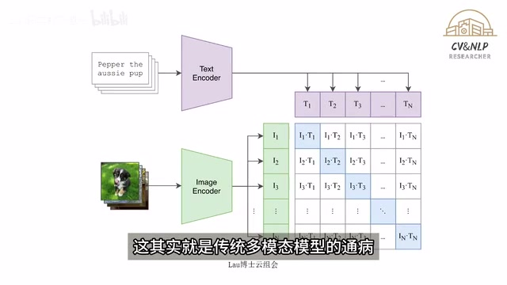
00:01:21–00:01:24 · 画面 02700:01:24–00:01:26 · 画面 028
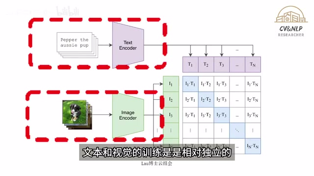
00:01:24–00:01:26 · 画面 028传统的做法是先用大量的文本 Token 训一个文本大模型后期再把视觉模块粘上去然后用 1 比 1 视觉和文本的 Token 来训练整个模型传统的方案认为这种比例的视觉模型能够快速的提升模型的多模态能力但实际上是不是这样的呢?接下来 K2.5 的验证给出了答案
00:01:26–00:01:28 · 画面 029
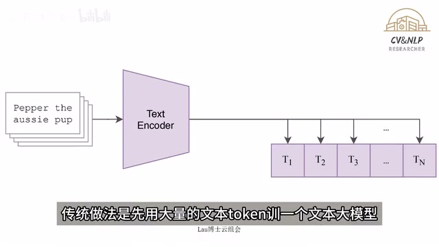
00:01:26–00:01:28 · 画面 02900:01:28–00:01:31 · 画面 030
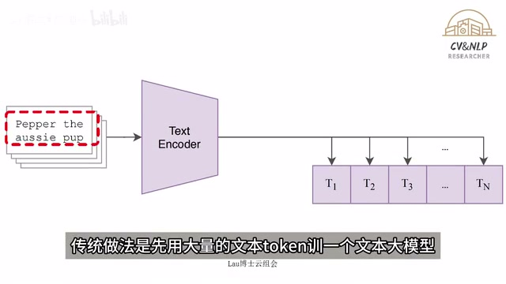
00:01:28–00:01:31 · 画面 03000:01:31–00:01:33 · 画面 031
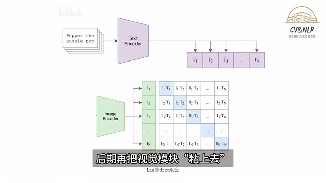
00:01:31–00:01:33 · 画面 03100:01:33–00:01:34 · 画面 032
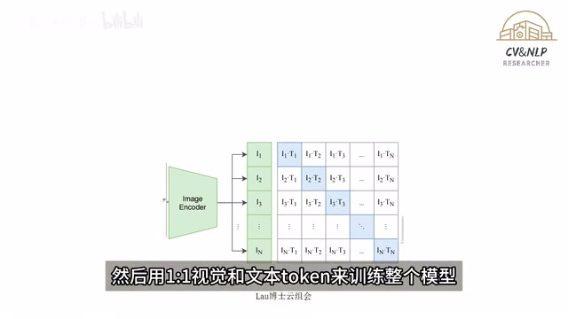
00:01:33–00:01:34 · 画面 03200:01:34–00:01:36 · 画面 033
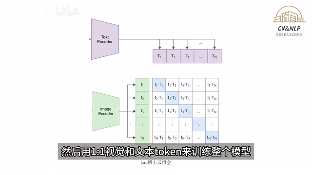
00:01:34–00:01:36 · 画面 03300:01:36–00:01:37 · 画面 034
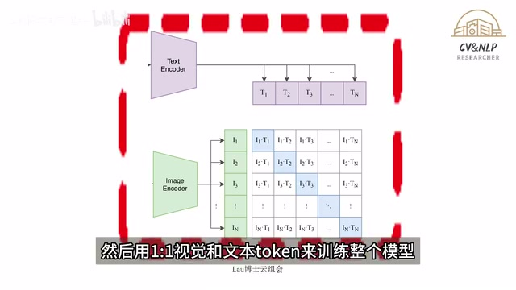
00:01:36–00:01:37 · 画面 03400:01:37–00:01:41 · 画面 035
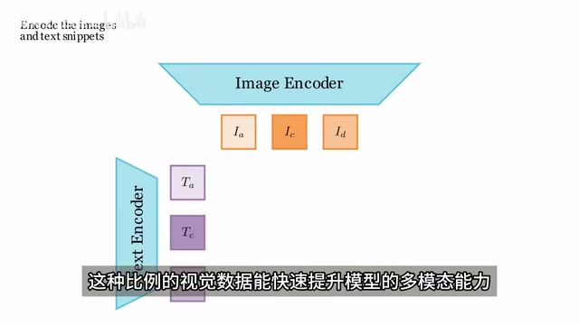
00:01:37–00:01:41 · 画面 03500:01:41–00:01:45 · 画面 036
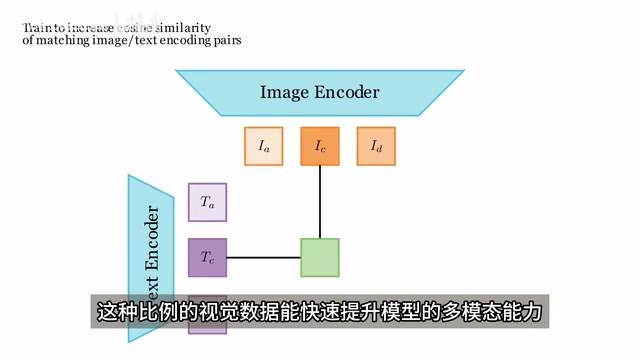
00:01:41–00:01:45 · 画面 03600:01:45–00:01:46 · 画面 037
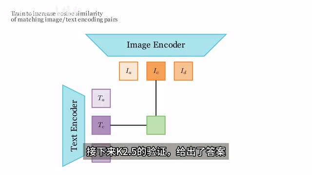
00:01:45–00:01:46 · 画面 03700:01:46–00:01:47 · 画面 038
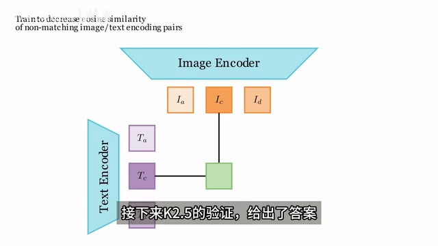
00:01:46–00:01:47 · 画面 03800:01:47–00:01:49 · 画面 039
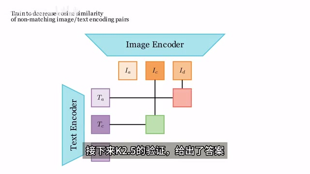
00:01:47–00:01:49 · 画面 03900:01:49–00:01:51 · 画面 040
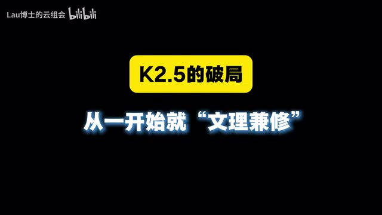
00:01:49–00:01:51 · 画面 040和传统的多模态模型不一样 K2.5 的文本和视觉从训练的早期就绑定一起并且视觉和文本的比例不是 1 比 1 而是固定在了 1 比 9
00:01:51–00:01:54 · 画面 041
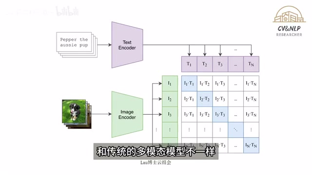
00:01:51–00:01:54 · 画面 04100:01:54–00:01:57 · 画面 042
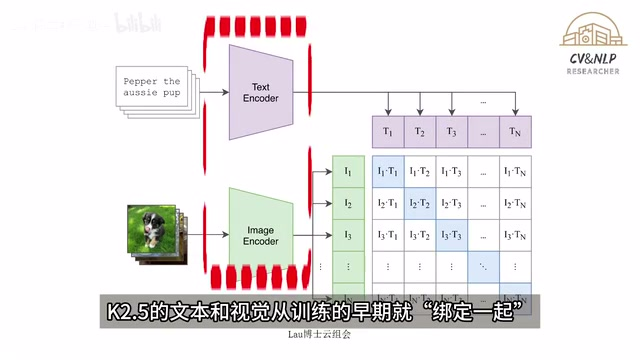
00:01:54–00:01:57 · 画面 04200:01:57–00:01:58 · 画面 043
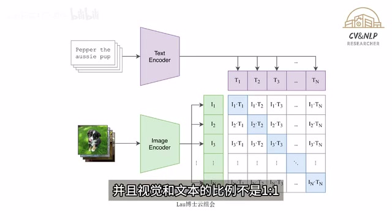
00:01:57–00:01:58 · 画面 04300:01:58–00:02:00 · 画面 044
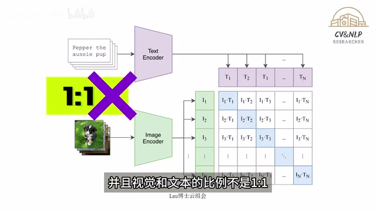
00:01:58–00:02:00 · 画面 04400:02:00–00:02:04 · 画面 045
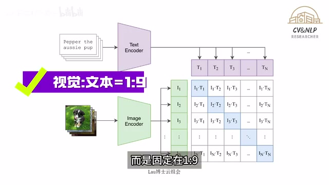
00:02:00–00:02:04 · 画面 045从预训练阶段就一直保持实验数据显示早期融合加低视觉比例让视觉知识、文本推理、代码能力全方面的超越了传统的中期、后期融合的方案比如早期融合的视觉推理的得分是 43.8 那后期融合只有 39.0
00:02:04–00:02:08 · 画面 046
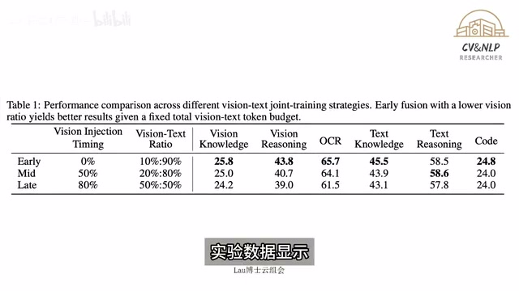
00:02:04–00:02:08 · 画面 04600:02:08–00:02:13 · 画面 047
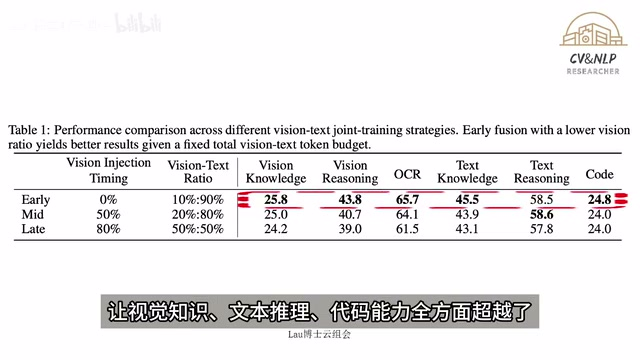
00:02:08–00:02:13 · 画面 04700:02:13–00:02:14 · 画面 048
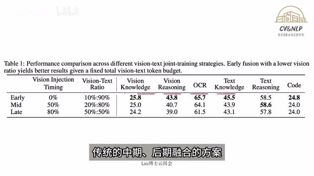
00:02:13–00:02:14 · 画面 04800:02:14–00:02:17 · 画面 049
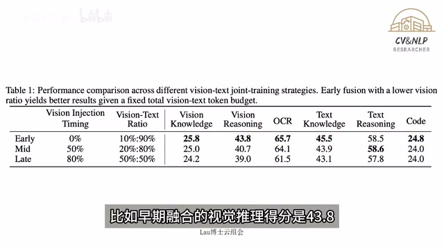
00:02:14–00:02:17 · 画面 04900:02:17–00:02:22 · 画面 050
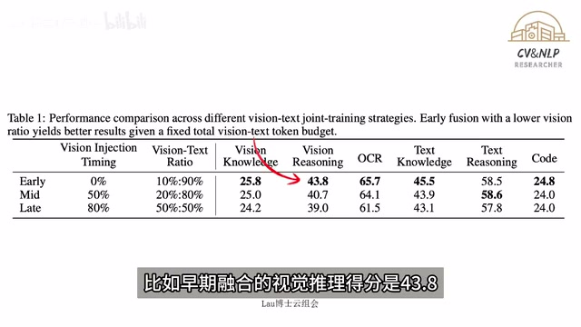
00:02:17–00:02:22 · 画面 050这揭示了什么呢？我的理解是，多模态模型就应该一开始以多模态的形式进行训练，而不是将不同模态分开训练再进行融合。后者就像是让一个练习时长两年半的文科生突然加大力度学美术，在美感方面肯定是不如一开始就两门学科共同学习的学生。
00:02:22–00:02:23 · 画面 051
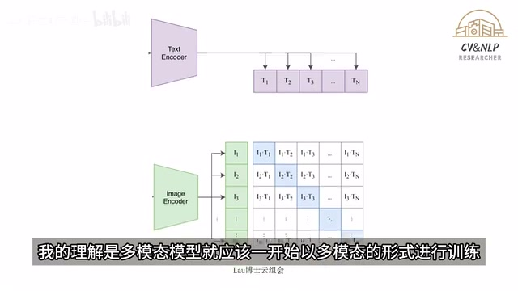
00:02:22–00:02:23 · 画面 05100:02:23–00:02:27 · 画面 052
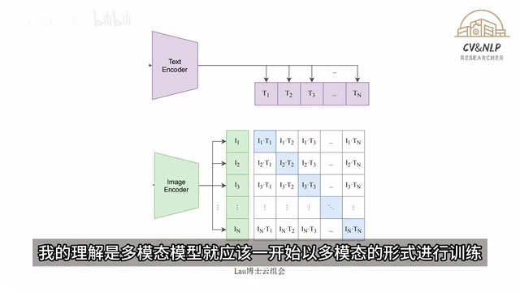
00:02:23–00:02:27 · 画面 05200:02:27–00:02:30 · 画面 053
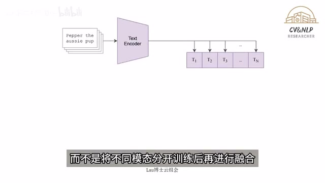
00:02:27–00:02:30 · 画面 05300:02:30–00:02:32 · 画面 054
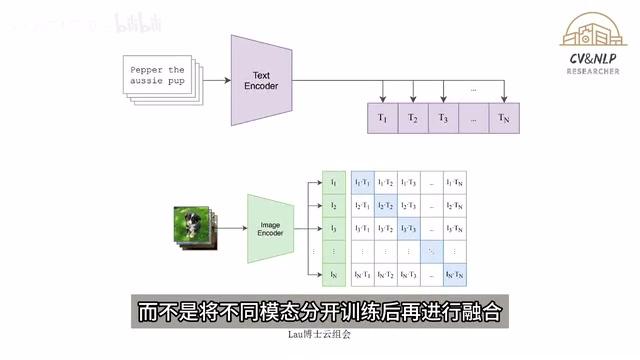
00:02:30–00:02:32 · 画面 05400:02:32–00:02:34 · 画面 055
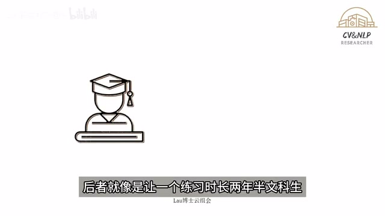
00:02:32–00:02:34 · 画面 05500:02:34–00:02:36 · 画面 056
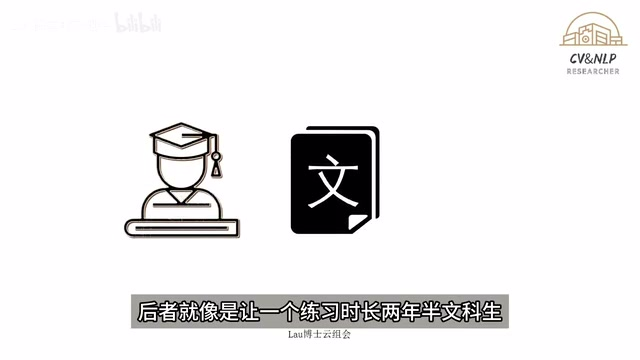
00:02:34–00:02:36 · 画面 05600:02:36–00:02:39 · 画面 057
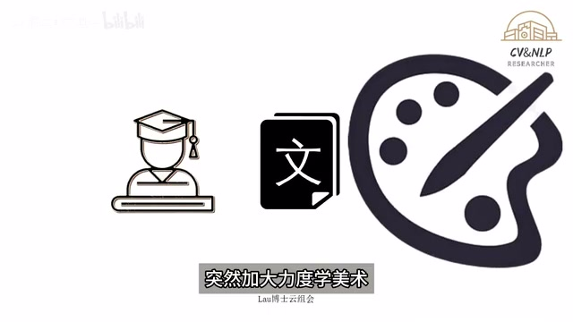
00:02:36–00:02:39 · 画面 05700:02:39–00:02:43 · 画面 058
00:02:39–00:02:43 · 画面 05800:02:43–00:02:44 · 画面 059
00:02:43–00:02:44 · 画面 05900:02:44–00:02:46 · 画面 060
00:02:44–00:02:46 · 画面 060在预训练结束以后到了 Post Training 的阶段这个阶段会对 K2.5 进行针对性的微调 K2.5 在这个阶段引入了 Zero Vision SFT 中文叫做零视觉监督微调意思是不用视觉标注数据也能增强视觉任务上的表现这听起来是不是有点反常识了
00:02:46–00:02:48 · 画面 061
00:02:46–00:02:48 · 画面 06100:02:48–00:02:52 · 画面 062
00:02:48–00:02:52 · 画面 06200:02:52–00:02:54 · 画面 063
00:02:52–00:02:54 · 画面 06300:02:54–00:02:57 · 画面 064
00:02:54–00:02:57 · 画面 06400:02:57–00:03:00 · 画面 065
00:02:57–00:03:00 · 画面 06500:03:00–00:03:04 · 画面 066
00:03:00–00:03:04 · 画面 06600:03:04–00:03:08 · 画面 067
00:03:04–00:03:08 · 画面 067实际上，这是引入了文本指令，让 K2.5 学会视觉相关的工具使用。论文也提到，所有的图像操作是通过 iPython 的解释器编程实现的，把视觉任务转化成了文本任务，让模型学习文本指令到视觉任务逻辑到工具调用的映射，刻意的避免了加入人工标注的视觉轨迹，也就意味着 K2.5 的视觉能力是用纯文本数据训练出来的。
00:03:08–00:03:12 · 画面 068
00:03:08–00:03:12 · 画面 06800:03:12–00:03:16 · 画面 069
00:03:12–00:03:16 · 画面 06900:03:16–00:03:20 · 画面 070
00:03:16–00:03:20 · 画面 07000:03:20–00:03:24 · 画面 071
00:03:20–00:03:24 · 画面 07100:03:24–00:03:27 · 画面 072
00:03:24–00:03:27 · 画面 07200:03:27–00:03:31 · 画面 073
00:03:27–00:03:31 · 画面 07300:03:31–00:03:33 · 画面 074
00:03:31–00:03:33 · 画面 07400:03:33–00:03:34 · 画面 075
00:03:33–00:03:34 · 画面 07500:03:34–00:03:38 · 画面 076
00:03:34–00:03:38 · 画面 076大家看完推理阶段就能明白这是什么意思了。现在这里有一张三色饼图，用户提问蓝绿两色的占比总和，K2.5 会通过编写代码来解决。首先会将问题拆解成加载图像、识别具体颜色的扇形、计算每种颜色的百分比、求和绿色和蓝色扇形的四个步骤，调用对应的 Python 语句逐一解决，最后得出了 54.1%的答案。
00:03:38–00:03:39 · 画面 077
00:03:38–00:03:39 · 画面 07700:03:39–00:03:41 · 画面 078
00:03:39–00:03:41 · 画面 07800:03:41–00:03:44 · 画面 079
00:03:41–00:03:44 · 画面 07900:03:44–00:03:49 · 画面 080
00:03:44–00:03:49 · 画面 08000:03:49–00:03:50 · 画面 081
00:03:49–00:03:50 · 画面 08100:03:50–00:03:55 · 画面 082
00:03:50–00:03:55 · 画面 08200:03:55–00:03:56 · 画面 083
00:03:55–00:03:56 · 画面 08300:03:56–00:03:59 · 画面 084
00:03:56–00:03:59 · 画面 08400:03:59–00:04:03 · 画面 085
00:03:59–00:04:03 · 画面 085我们再来看一个例子对比两张疯狂动物城的树懒场景图 K2.5 通过调用 Python 代码先逐像素对比找出了 27 个疑似差异再筛选出 10 个关键不同比如 DMV 标变 EMV 马克杯的文字变了说清了具体的变化在过去多数的 Agent 模型是以单一 Agent 串行执行的任务越复杂耗时越长
00:04:03–00:04:04 · 画面 086
00:04:03–00:04:04 · 画面 08600:04:04–00:04:08 · 画面 087
00:04:04–00:04:08 · 画面 08700:04:08–00:04:12 · 画面 088
00:04:08–00:04:12 · 画面 08800:04:12–00:04:16 · 画面 089
00:04:12–00:04:16 · 画面 08900:04:16–00:04:19 · 画面 090
00:04:16–00:04:19 · 画面 09000:04:19–00:04:22 · 画面 091
00:04:19–00:04:22 · 画面 09100:04:22–00:04:26 · 画面 092
00:04:22–00:04:26 · 画面 09200:04:26–00:04:30 · 画面 093
00:04:26–00:04:30 · 画面 093不知道你有没有试过用 AI 处理复杂任务，比如分析 10 篇论文写一份行业报告。以前的 agent 都是串行干活，先找论文，再读第一篇，再读第二篇，中间卡一步就全停。这就是核心问题，单一 agent 串行执行。
00:04:30–00:04:34 · 画面 094
00:04:30–00:04:34 · 画面 09400:04:34–00:04:35 · 画面 095
00:04:34–00:04:35 · 画面 09500:04:35–00:04:38 · 画面 096
00:04:35–00:04:38 · 画面 09600:04:38–00:04:42 · 画面 097
00:04:38–00:04:42 · 画面 09700:04:42–00:04:44 · 画面 098
00:04:42–00:04:44 · 画面 09800:04:44–00:04:47 · 画面 099
00:04:44–00:04:47 · 画面 09900:04:47–00:04:50 · 画面 100
00:04:47–00:04:50 · 画面 100任务越复杂耗时越长就像一个人盖大楼从打地基到装修全自己来效率非常低其中一个环节出错就直接罢工 K2.5 采用的是 Agent Swarm 中文名叫智能体集群不同于传统并行 Agent 采取平均分工的思路它是由一个主 Agent 加多个子 Agent 组成
00:04:50–00:04:54 · 画面 101
00:04:50–00:04:54 · 画面 10100:04:54–00:04:58 · 画面 102
00:04:54–00:04:58 · 画面 10200:04:58–00:05:00 · 画面 103
00:04:58–00:05:00 · 画面 10300:05:00–00:05:04 · 画面 104
00:05:00–00:05:04 · 画面 10400:05:04–00:05:08 · 画面 105
00:05:04–00:05:08 · 画面 10500:05:08–00:05:12 · 画面 106
00:05:08–00:05:12 · 画面 10600:05:12–00:05:16 · 画面 107
00:05:12–00:05:16 · 画面 107复杂的任务拆解后并行处理多个步骤，能同时进行，即使其中一个出错也能进行下去，容错拉满。同时这个并行不是一般的并行，而是有分工的并行。什么意思呢？我们还是以刚刚分析十篇论文写一份行业报告这个任务为例，K2.5 会通过一个主 agent 指挥多个子 agent 来完成任务。这个主 agent 可以理解成是导师，给不同的学生来分配任务。
00:05:16–00:05:20 · 画面 108
00:05:16–00:05:20 · 画面 10800:05:20–00:05:24 · 画面 109
00:05:20–00:05:24 · 画面 10900:05:24–00:05:28 · 画面 110
00:05:24–00:05:28 · 画面 11000:05:28–00:05:29 · 画面 111
00:05:28–00:05:29 · 画面 11100:05:29–00:05:34 · 画面 112
00:05:29–00:05:34 · 画面 11200:05:34–00:05:36 · 画面 113
00:05:34–00:05:36 · 画面 11300:05:36–00:05:39 · 画面 114
00:05:36–00:05:39 · 画面 11400:05:39–00:05:40 · 画面 115
00:05:39–00:05:40 · 画面 11500:05:40–00:05:43 · 画面 116
00:05:40–00:05:43 · 画面 11600:05:43–00:05:44 · 画面 117
00:05:43–00:05:44 · 画面 117Agent1 负责梳理每篇论文的提出背景。
00:05:44–00:05:46 · 画面 118
00:05:44–00:05:46 · 画面 11800:05:46–00:05:48 · 画面 119
00:05:46–00:05:48 · 画面 119Agent 二负责提取每篇论文方法中的亮点。Agent 三负责分析所有的数据。最后主 Agent 再汇总每个人的文案并校对，产出完整的报告。这样做不仅每个 Agent 能够发挥各自的长处，而非平均主义 ，犯而不禁。同时将一个复杂任务拆分成多个子任务，也相当于对上下文做了分片，每个 Agent 只需处理自己的上下文即可。
00:05:48–00:05:51 · 画面 120
00:05:48–00:05:51 · 画面 12000:05:51–00:05:55 · 画面 121
00:05:51–00:05:55 · 画面 12100:05:55–00:05:57 · 画面 122
00:05:55–00:05:57 · 画面 12200:05:57–00:06:09 · 画面 123
00:05:57–00:06:09 · 画面 12300:06:09–00:06:12 · 画面 124
00:06:09–00:06:12 · 画面 12400:06:12–00:06:13 · 画面 125
00:06:12–00:06:13 · 画面 12500:06:13–00:06:17 · 画面 126
00:06:13–00:06:17 · 画面 126从另一个角度来看，这也突破了复杂任务和过长上下文的限制。从最终的数据上看，Agent Swarm 借助了动态资源调度和并行化处理，推理的延迟最高可降低 4.5 倍。除了以上方面亮眼的表现之外，K2.5 在多项的版单基准上同样取得了优异的成绩，我们来看两个最亮眼的方面。
00:06:17–00:06:20 · 画面 127
00:06:17–00:06:20 · 画面 12700:06:20–00:06:24 · 画面 128
00:06:20–00:06:24 · 画面 12800:06:24–00:06:26 · 画面 129
00:06:24–00:06:26 · 画面 12900:06:26–00:06:29 · 画面 130
00:06:26–00:06:29 · 画面 13000:06:29–00:06:30 · 画面 131
00:06:29–00:06:30 · 画面 13100:06:30–00:06:36 · 画面 132
00:06:30–00:06:36 · 画面 13200:06:36–00:06:39 · 画面 133
00:06:36–00:06:39 · 画面 13300:06:39–00:06:41 · 画面 134
00:06:39–00:06:41 · 画面 134K2.5 在推理与通用能力测试其中人类终极考试取得了最好的成绩，远远高于第二名的 Gemini 3 Pro。智能体方面的成绩格外亮眼，几乎在所有的 Benchmark 上取得了缩淘，大幅超越了一众能力超群的闭源模型。尤其在 BrowseComp，也就是测试智能体在网页浏览与信息合成的任务当中，领先了 Gemini 3 Pro 20 多个点。
00:06:41–00:06:46 · 画面 135
00:06:41–00:06:46 · 画面 13500:06:46–00:06:49 · 画面 136
00:06:46–00:06:49 · 画面 13600:06:49–00:06:51 · 画面 137
00:06:49–00:06:51 · 画面 13700:06:51–00:06:54 · 画面 138
00:06:51–00:06:54 · 画面 13800:06:54–00:06:56 · 画面 139
00:06:54–00:06:56 · 画面 13900:06:56–00:06:59 · 画面 140
00:06:56–00:06:59 · 画面 14000:06:59–00:07:01 · 画面 141
00:06:59–00:07:01 · 画面 14100:07:01–00:07:18 · 画面 142
00:07:01–00:07:18 · 画面 142这也是为什么我在开头说即使 Dixit 为是发布在 Agent 层面大概率也是比不过 Kimi K2.5 论文的最后提到开源 K2.5 是为了推动通用智能的进步当 AI 能看能听能说能做还能自己组队干活它就不再是一个工具而是像电力网络一样的基础设施
00:07:18–00:07:20 · 画面 143
00:07:18–00:07:20 · 画面 14300:07:20–00:07:22 · 画面 144
00:07:20–00:07:22 · 画面 14400:07:22–00:07:24 · 画面 145
00:07:22–00:07:24 · 画面 14500:07:24–00:07:28 · 画面 146
00:07:24–00:07:28 · 画面 14600:07:28–00:07:32 · 画面 147
00:07:28–00:07:32 · 画面 14700:07:32–00:07:36 · 画面 148
00:07:32–00:07:36 · 画面 148最后 AI 给你的生活带来了最大的改变是什么？是帮你写文案，解难题，还是提高了工作效率？欢迎在评论区分享你的故事。OK，本期视频的 PPT、论文、翻译稿相关资料在评论区置顶。是不是值得一个点赞、收藏？关注我们下期云组会，再见。
00:07:36–00:07:40 · 画面 149
00:07:36–00:07:40 · 画面 14900:07:40–00:07:44 · 画面 150
00:07:40–00:07:44 · 画面 15000:07:44–00:07:48 · 画面 151
00:07:44–00:07:48 · 画面 15100:07:48–00:07:52 · 画面 152
00:07:48–00:07:52 · 画面 15200:07:52–00:07:54 · 画面 153
00:07:52–00:07:54 · 画面 15300:07:54–00:07:55 · 画面 154
00:07:54–00:07:55 · 画面 154转写与来源说明 · 0 个自动复核提示
保留 20 个原始语音片段，0 个片段触发自动复核提示。提示仅用于定位可能的术语、重复或识别问题，不等于已确认错误。
讲解画面为源视频截图（640×360），不是可编辑 PPT 文件。全片按每秒 2 帧扫描内容变化，逐步展开页保留；连续动画保留代表画面。清晰度受源视频限制。
原视频：paper/合集_2026-10-16_论文精读/DeepSeek-V4不会比它更好 Kimi K2.5【论文精读】.mp4
SHA-256：af54d741a0f3bfebf12e2048d3fb03edba769814257d41591ffe7d541aaf651b
全文按视频语音与画面制作。原论文可从上方链接下载；完整资料包保留全文、原始逐字稿、字幕和校对记录。